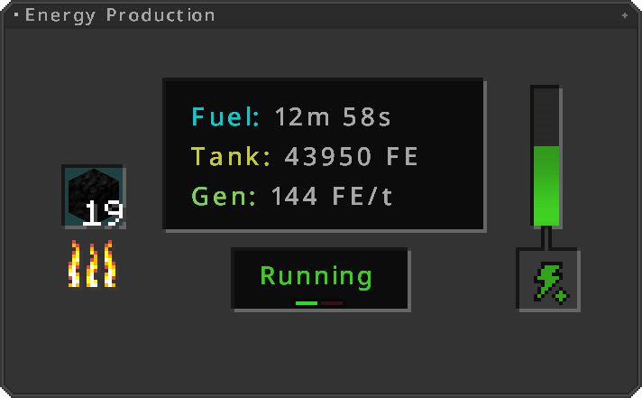
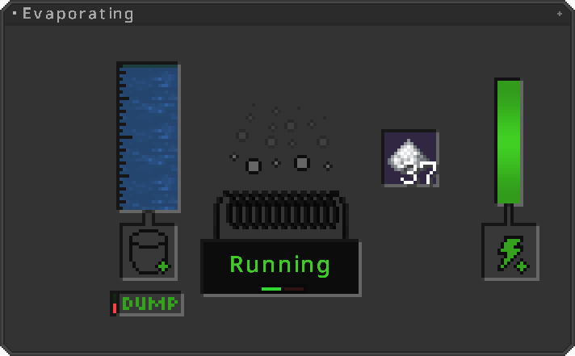
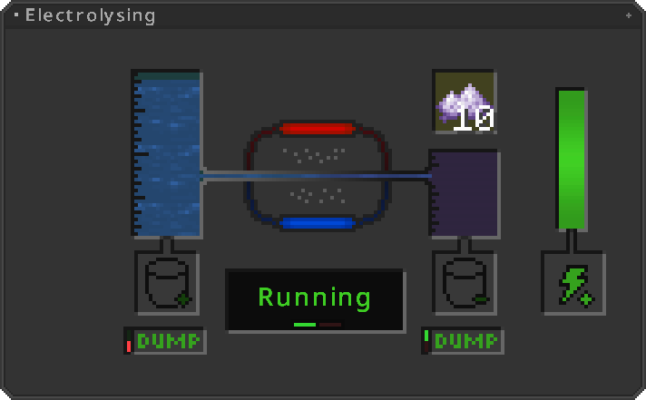
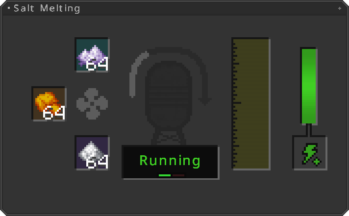
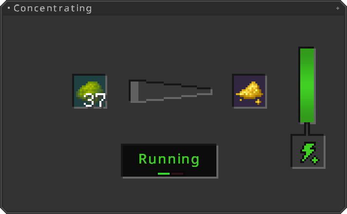
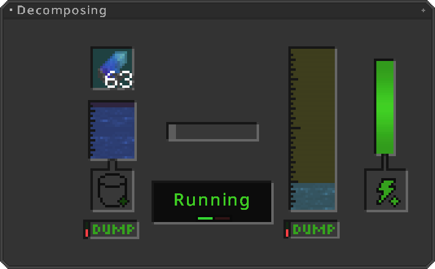
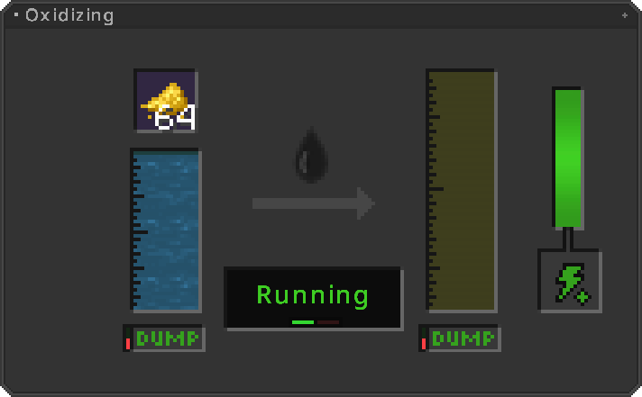
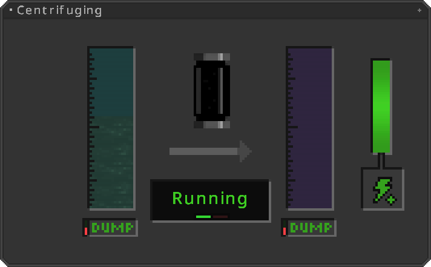
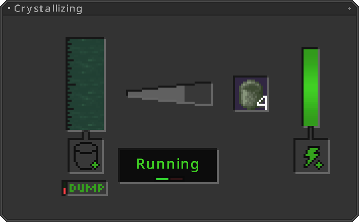
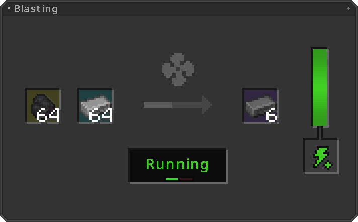

Machines

Introduction¶
Have your Thorium Crafting Table set up? Great!
Now we will craft our first machines!
You need one of each machine to successfully build a reactor and turbine!
The Just Enough Items Mod is highly recommended for crafting!
Please manage to install JEI since there are way too many recipes to show them all!!
Controlling your Machine¶
There are some possibilities available to power-control your machines! Firstly, you can completely turn it off by simply clicking the "Power" button on the left side of the machine's inventory!
Controlling it is also possible through Redstone! Simply change the "Redstone Mode" beneath the "Power" button.
When using "Ignored" the machine is always powered, at least until "Power" is true. "Normal" means it will run when an active redstone signal is applied to it or on a surrounding block. Last but not least, there's "Inverted", which is basically like the "Normal" mode but inverted.
Machine Casing¶
You need this machine casing for crafting all machines!
Crafting ingredient only!
Fuel Generator¶
If you don't already have an energy generation from other mods, you will need a Fuel Generator!
The fuel Generator burns fossile fuels and generates at a rate of 144 FE/t
Functionality

By adding burnable fuel in the input slot, the generator will generate 144FE (Forge Energy) per Game Tick (20 times per second).
When the internal energy buffer is filled, generation is not being stopped until it runs out of the currently burned fuel!
Fluid Evaporator¶
Machine needed for fuel production.
Gaining salt is this machines most use!
Needs 142 FE/t
Functionality

Heats up fluids to their boiling point and evaporate them that way.
Excess debris like salts can be extracted this way!
In this case water is being evaporated and Sodium is gained.
Electrolytic Separator¶
Machine needed for fuel production.
Uses eletrolysis on fluids to extract minerals.
Needs 86 FE/t
Functionality

Uses eletrolysis on fluids to extract minerals.
Mostly used for water to gain potassium salts!
Like in this case.
Salt Melter¶
Machine needed for fuel production.
Melts different salts into a homogeneous fluid!
Needs 233 FE/t
Functionality

Uses extreme heat to melt multiple salts together.
Beforehand, it need to heat up to a recipe specified temperature, indicated by the Fan icon.
The reactors main fluid is made this way!
Concentrator¶
Uses materials to form their high concentrated variants!
Needs 64 FE/t
Functionality

Mostly used to produce yellow cake out of raw uranium.
First step of uranium enrichment!
Decomposer¶
Decomposes items into a fluid.
Needs 33 FE/t
Functionality

Injects decomposed items into a fluid.
Mostly used for hydrofluorite production!
Uranium Oxidizer¶
Injecting minerals into fluids using oxidization.
Needs 54 FE/t
Functionality

Oxidized resources as uranium and injects it into fluids.
Mostly used to produce Uranium Hexafluorite
Fluid Centrifuge¶
Fluid manpulation using centrifuging
Needs 46 FE/t
Functionality

High rotation modifies fluids by extracting elementary particles or substances.
Mostly used to enrich Uranium Hexafluorite!
Crystallizer¶
Turns fluids into their solid form.
Needs 54 FE/t
Functionality

Modifies fluids state of matter into their solid form.
Blast Furnace¶
Having an Blast Furnace is essential, its mostly used to produce Blasted Stone, Iron- and Steel Ingots
Needs 189 FE/t
Functionality

Uses two ingredients to form them into one. In this case, Coal and Blasted Iron to produce Steel!
Beforehand, it need to heat up to a recipe specified temperature, indicated by the Fan icon.
Here it's 1050°C!